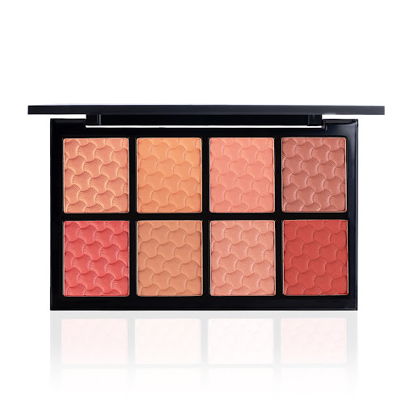
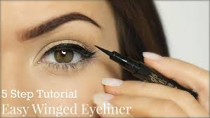
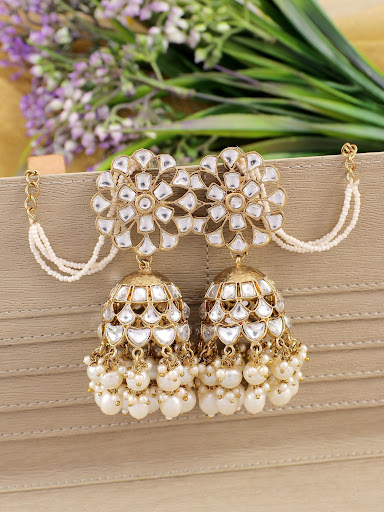

Beauty & Accessories Collection
Lipstick

Adds color to lips,Lipstick is a cosmetic product applied to lips for color, texture, and shine, typically made from a blend of waxes, oils, pigments, and
emollients, available in bullet, liquid, or crayon forms with finishes like matte, satin, or gloss for enhancing lip appearance. It adds vibrant, rich color and
coverage, ranging from bold to subtle, and can also offer moisturizing properties, though less than lip balm.
Blush

Gives glow to cheeks A blush is a makeup product, also called rouge, used to add a healthy, natural-looking flush of color to the
cheeks, mimicking
the rosy
tint from excitement or exertion, available in powders, creams, liquids, and gels, and applied to create youthfulness, dimension, and
a radiant glow by enhancing
cheekbones and brightening the complexion.
Eye liner

Defines eyes Eyeliner is a cosmetic applied around the eyes to define them, enhance shape, and create various looks, from subtle definition to dramatic
effects like winged or cat-eye styles. It comes in different forms like pencils (easy for beginners), gels (smoky effects), and liquids
(sharp lines), available in many
colors beyond black and brown, and can be applied above or below lashes and on the waterline.
Eye Shadow

Adds color to eyelids Eyeshadow is a colored cosmetic powder, cream, or liquid applied to eyelids and the area around the eyes to enhance their appearance,
add dimension, and draw attention, available in various finishes (matte, shimmer, glitter) and formulas (powder, cream, stick) for
different looks, from natural to dramatic.
Earrings

Enhances look.An earring is a piece of jewelry worn in or on the earlobe, typically in a pierced hole or attached with a
clip/fastener, serving as decoration, a symbol of status, or for luck, coming in styles like studs, hoops, and drops, and varying across
cultures.